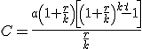

Matemática financiera
Anualidades de capitalización
Las anualidades de capitalización son cantidades fijas que se depositan cada año a un interés compuesto durante un número fijo de años. Al final se consigue el capital más los intereses generados.
Si a es la cantidad fija ingresada durante t años y r el tipo de interés compuesto:
– Al finalizar el primer año tendré: a·(1+r)
– Al finalizar el segundo año: a·(1+r)+a(1+r)2
–…al finalizar el último año: a(1+r)+a(1+r)2+…+a(1+r)t
Que es la suma de los t términos de una progresión geométrica, por lo que quedaría:
En caso de que haya k aportaciones al año, quedaría:

Ejemplo: Contratamos un depósito al 3% durante 3 años. ¿Qué cantidades semestrales debemos aportar para obtener un capital final de 10.000 €?
Ejercicio: Si meto 10.000 € al año en un depósito al 2% durante 5 años. ¿Qué capital final obtendré?
Solución: 53.081,21 €
Obra publicada con Licencia Creative Commons Reconocimiento No comercial Compartir igual 4.0